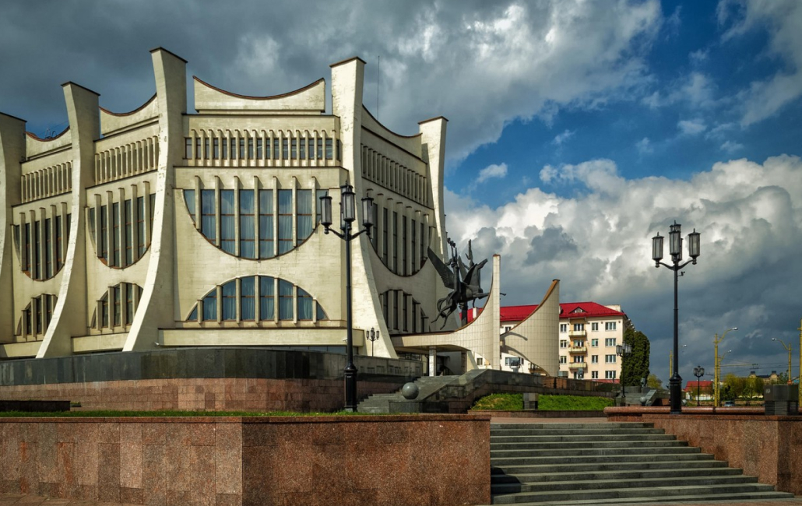

Гродно
Жильё
-
Kip Town Hostel
Улица Карла Маркса, 11
Это небольшой хостел в самом сердце Гродно. Хостел предоставляет недорогое и комфортное размещение в чистом уютном помещении с двухъярусными кроватями, которые оснащены индивидуальными шторками. В хостеле имеется зона отдыха, зона приёма пищи, ячейки для хранения личных вещей, кухня с самообслуживанием, ванная комната с душем.
Общий 10-местный номер - 18 руб./сут
-
Old bridge Hostel
Улица Розанова, 34
Хостел находится вблизи исторического центра в тихом районе. Для проживания гостям предлагаются два основных типа комнат: отдельные и многоместные. Для общего пользования есть фен, стиральная машина и утюг с гладильной доской, Wi-Fi.На территории здания есть закрытая парковка для автомобилей.
Одиннадцатиместный номер - 25 руб. /сут.
Двухместный номер - от 80 руб./сут.
-
Парк-отель «Кронон»
Урочище Пышки, 19
Небольшой четырехзвездочный отель, расположен в центре живописного лесного массива Гродно. В номерах ковровое покрытие, двуспальная кровать, рабочий стол, шкаф, сейф, кондиционер, телевизор, телефон, радио отеля с расслабляющей музыкой, мини-бар, бутилированная вода, кофемашина. В ванной комнате: теплый пол, душ, биде, фен, полотенца, туалетные принадлежности, халаты, тапочки; гостевой санузел.
Номер двухместный “Стандарт” - от 364 руб./сут.
Номер двухместный “Kronon Suite” - от 634 руб./сут.
-
Гостиница “Гостим”
Улица Мостовая, 31
Мини-гостиница расположена в центре Гродно. К услугам гостей круглосуточная стойка регистрации, общая кухня и бесплатный Wi-Fi на всей территории. Имеется частная парковка.
Трехместные и четырехместные номера, а также номера в общей комнате - от 30 руб./сут.
Достопримечательности
-
Лютеранская кирха
Местоположение: улица Академическая, 7а
Кирха – это церковь лютеранского вероисповедания. Десятилетием ранее в город, по приглашению гродненского старосты, приехали лютеране из Германии, которые должны были открыть здесь королевские мануфактуры.
Для богослужений прихожане перестроили трехэтажное здание бывшей таверны, которое общине подарил король Станислав Август. Полностью строительные работы завершились лишь к 1843 году. Рядом с церковью появилось первое лютеранское кладбище, позже – колокольня с часами. В храме открылась евангелическая школа.
Новая для белорусских земель религия прижилась в Гродно довольно быстро, тем более что ее поддерживал правитель Речи Посполитой. В 1912 году к зданию пристроили новый дом пастора, в котором действовала школа для лютеран.
В упадок кирха пришла с приходом советской власти. В здании разместили архив, в пристройках поселили жильцов, церковную утварь передали работникам партии, орган отошел госфилармонии. В 1936 году навсегда разрушено лютеранское кладбище, на его месте в наши дни стоят новостройки и детсад.
После распада СССР кирха была возращена лютеранам. В 2013 началась новая реставрация храма. Во время работ по укреплению фундамента были найдены надгробные плиты с надписями на немецком языке. На фасаде и внутри церкви нет ни одного украшения, фрески или икон. В основе лютеранской религии - строгость и сдержанность. Это отражается и во внешнем виде храма. Единственным украшением являются витражи. В здании сохранились кованая купель и колокол, которые используются по сей день. Сегодня Кирха в Гродно единственно-дейстующий лютеранский храм в Беларуси. Входит в список историко-культурного наследия Беларуси.
-
Парк Жилибера
Местоположение: улица Элизы Ожешко, 15.
Жан Эммануэль Жилибер - французский ученый приехавший в Гродно по приглашннгию мецената Антония Тизенгауза. Жан Эммануэль основал первое высшее медицинское учебное заведение на территории Беларуси — Гродненскую медицинскую академую. Помимо этого, он был одним из создателей акушерской школы и гродненского госпиталя, показал новаторские методы работы местным аптекарям и основал ботанический сад.
Сад был заложен в 1775 году и служил наглядным учебным пособием для учащихся Академии. Здесь росли редкие представители флоры, привезённые Жилибером из родного Лиона и прижившиеся на гродненской земле. Спустя три года после создания, сад уже считался одним из лучших в Европе и насчитывал 2000 растительных видов. Однако когда Жилибер покинул Гродно сад пришел в запустение, большинство редких видов растений было вывезено в Вильно.
В 1920-е в Гродно снова решили основать ботанический сад. Он не был так разнообразен растительными видами, как сад Жилибера, но включал более 800 растительных видов. Другую часть сада реконструировали и в завершении украсили бюстом белорусско-польской писательницы Элизы Ожешко.
Сегодняшний парк значительно отличается от своего предшественника, но всё также впечатляет своими зелёными аллеями, прекрасными растениями, мостами над речкой Городничанкой и бронзовыми статуями. Летом в саду работают кафетерии, аттракционы и летний амфитеатр..
-
Старый замок
Местоположение: Замковый тупик, улица Замковая, 22
История замка берет начало в ещё в XI столетии. Тогда он представлял собой ряд укреплённых стен и башен, дополнительно защищённых рвом и оврагом. В 1391 году замок был превращён в одну из важнейших резиденций Витовта. Именно по его указанию в 1398 году здесь было возведено новое сооружение, выполнявшее оборонительные функции. Построено оно было из камня и сменило существовавшую здесь ранее деревянную крепость. Тогда же на замковой территории произошло строительство Нижней церкви, от которой сейчас сохранился фундамент и остатки стен.
Около 1580 король Речи Посполитой Стефан Баторий решил перестроить замок в стиле ренессанс. В 1655 году замок был полностью разрушен. Это случилось в войну с Русским царством. После этого возобновлением замка занялся гродненский староста. Однако замок снова был разрушен в годы Северной войны. В середине XVII столетия рядом со зданием старого замка возвели новое. Случилось это при правлении короля Августа III. Новый замок, дошедший до наших дней, на момент своего появления был летней королевской резиденцией.
Рядом с замком находится мост, который соединяет его с городом. Сегодня он каменный и выполнен в форме арки. Таковым он стал в XVII столетии, сменив бывший здесь ранее мост из дерева.
После вхождения города в состав Российской империи, замок оказался переоборудованным под казармы. Тогда же здесь были открыты гостиница и библиотека, а также казино. В наше время в здании замка размещена главная экспозиция, принадлежащая Гродненскому историко-археологическому музею. В 2015 году были начаты работы, предполагающие проведение реконструкции сооружения. Согласно планам, замку должен быть возвращён вид, присущий ему при правлении Стефана Батория.
В 2021 году в восстановленных помещениях была создана экспозиция. Она рассказывает об основных этапах застройки Замковой горы. Экспозиция знакомит с занятиями и ремёслами горожан, рассказывает о нападениях крестоносцев и обороне замка, об избрании Стефана Батория королём польским и великим князем литовским и о его роли в истории Гродно. В экспозиции представлены орудия труда и предметы быта, строительные материалы, оружие и военное снаряжение, найденные во время археологических исследований, которые проводились на Замковой горе с 1930-х годов и продолжаются в наши дни, а также кресла XVIII ст. из Старого замка, сундук XVIII в. и многие другие интересные предметы.
Стоимость билетов: школьники - 5 руб., студенты 7 руб., для остальных посетителей - 9 руб.
-
Гродненский областной драматический театр
Местоположение: улица Мостовая, 35
Первые театральные спектакли начали ставиться в Гродно еще с конца XVIII в. Для этих целей использовалось здание театра, принадлежавшее местному старосте А. Тызенгаузу. Оно было специально построено в 1780-е гг. К 1859 г. его удалось расширить за счет нескольких пристроек. В 1940 г. в составе сооружения появился третий этаж, а в 1975 г. была выполнена масштабная реконструкция, которая позволила увеличить пространство сцены.
Автором проекта нового здания Гродненского областного драматического театра является архитектор Геннадий Мачульский. Центральный вход украшен скульптурной фигурной группой «Пегас». Фойе двух залов украшают настенные росписи, скульптурно-живописные композиции, принадлежащие кисти и рукам Владимира Неклюдова, Ирины Лавровой и Игорю Пчельникову.
Большой зрительный зал с амфитеатром и балконом может вместить до 702 человека, малый рассчитан на 216 мест. Площадка вокруг театра, довольно скоро, превратилась в одну из популярных зон отдыха. Здесь можно наслаждаться видами Немана и проводить время на свежем воздухе.
За высокие достижения в области театрального искусства и за неоценимый вклад в развитие национально культуры Беларуси Совет Министров Республики Беларусь в 2011 году присвоил коллективу театра почетное звание «Заслуженный коллектив Республики Беларусь».
-
Большая хоральная синагога
Местоположение: улица Большая Троицкая,59A
Главная синагога в Гродно принадлежит к числу старейших европейских синагог, с заслуженным титулом самой красивой. Гродненская синагога – чудесный объект белорусского историко-культурного наследия, прекрасно функционирующий и сегодня. Регулярно, в синагоге проводятся службы по случаю многочисленных еврейских праздников, где паломники со всего мира получают порции с кошерной пищей. В синагоге открыт также еврейский музей. В нынешнем виде синагога была возведена только в начале XX века. Но фактически ее история берет свое начало еще в XVI веке, когда на этом месте уже находилась небольшая постройка из дерева. Первая значительная синагога появилась по инициативе раввина Мордехая Яффе только в 1578 году. Яффе выписал из Италии гениального Санти Гуччи – популярного тогда архитектора. Вид старой синагоги запечатлел на своих полотнах замечательный белорусский художник Наполеон Орда.
Участь у нее была плачевная: периодически, в пламени пожаров, уничтожалось ее былое величие. Главная синагога в Гродно окончательно была отстроена в начале века двадцатого, в стилистике русского модерна, где любопытен, как главный фасад, так и примыкающие здания по бокам. Синагога имеет форму квадрата и занимает три этажа, для которых характерны воздушные интерьеры и пышное убранство. Однако, новую синагогу, также, ожидало тяжелейшее испытание: с приходом советской власти на ее дверях был повешен массивный замок.
Во времена Второй мировой войны, синагога была полностью разграблена и пострадала от пулевых отверстий и снарядов в многочисленных боях. Доподлинно известно, что немецко-фашистские захватчики собирали в историческом здании евреев перед отправкой в концентрационные лагеря, а также накануне казней. В послевоенные годы в синагоге долгое время не проводился ремонт и она пришла в запущенное состояние. Во времена Советского Союза, в ней размещалось много всего, начиная со складов и заканчивая художественными мастерскими. И только в 90-х годах прошлого века историческое здание было передано местным евреям. Иудейская община полностью восстановила и отреставрировала синагогу, где было отремонтировано буквально все, начиная с протекающей крыши и заканчивая восстановленным электричеством.
-
Свято-Борисо-Глебский Коложский храм
Местоположение: улица Коложа, 6
На берегу Немана стоит древняя Коложская церковь и смотрит на Гродно. И так уже почти десять веков. Это место – уникальное. И не только своей архитектурой, но и своей атмосферой, впитать которую должен каждый белорус. Это живая история, душа страны.
Коложскую церковь по праву считают историко-архитектурным заповедником. Этот памятник архитектуры XII века – гордость Беларуси, тем более что аналогов подобных религиозных сооружений в стране нет. Коложская церковь немного напоминает гродненский собор, построенный еще раньше – Нижнюю церковь. Она, к сожалению, не сохранилась, но археологические исследования дают возможность сравнивать эти две постройки.
Впервые Коложская церковь упоминается в Ипатьевской летописи в 1183 году: «Того же лета Городен погоре всь и церквы каменная от блистання молние и шибения грома». Конечно, напрямую здесь не указано, что это именно Коложа, но ученые предполагают, что это так. В Гродно в то время существовало еще два каменных храма – это Нижняя церковь, расположенная в Старом замке, и Пречистенская церковь на нынешней территории монастыря Рождества Богородицы. Строительство Коложской церкви связывают с именами гродненских князей – Бориса и Глеба. Отсюда и второе название храма. Правда, точная дата возведения церкви, как и имена архитекторов, не известны. Да и не будут известны уже никогда. По поводу названия – Коложская церковь – существует несколько мнений. Одни ссылаются на запись в Никоновской летописи, которая гласит, что в 1406 году князь Витовт разрушил псковский город Коложу и пригнал в Гродно 11 тысяч пленных. Этих людей он поселил рядом с церковью, которую со временем стали называть Коложской. Есть и другая версия, которая связывает название церкви со словом «коложань». Это слово обозначало место, где бьют родники.
Древние гродненские храмы (включая Коложу) представляли собой традиционные трехапсидные крестово-купольные церкви. Их строили из плинфы, используя в кладке гранитные валуны. Снаружи Коложская церковь была декорирована цветными майоликовыми плитками, которые были выложены в виде креста. Пол храма тоже был сделан из майоликовых плит разных цветов. Было еще одно ноу-хау при строительстве храма: в его стены были вмурованы пустые кувшины, которые называли голосники. Это было сделано для облегчения конструкции и создания хорошей акустики. Горлышки кувшинов выступали над поверхностью стен, поэтому стены невозможно было расписать фресками. Снаружи церковь не штукатурили.
В 1596 году после Брестского собора при Коложской церкви создается базилианский монастырь. А потом в борьбу с верой включается природа. В 1720 году Коложа стала клониться на бок, причиной этого стал подмыв высокого холма, на котором стоит церковь, Неманом. Остановить реку оказалось не просто – в ночь с 1 на 2 апреля 1853 года часть церкви обрушилась в Неман. Еще один обвал произошел в 1889 году.
В 1897 году Коложу пытались спасти – укрепили берег, вместо разрушенных стен поставили деревянные. В советские годы в здании находился музей. Сейчас Коложская церковь – снова действующий храм.
-
Собор Святого Франциска Ксаверия
Местоположение: Советская площадь, 4
Кафедральный собор Святого Франциска Ксаверия — действующий католический храм в Гродно. Носит титул малая базилика. Более известное название костёла — Фарный, что означает главный храм. Такое название он получил в 1783, когда в пожаре пострадала располагавшаяся по соседству Фара Витовта.
История строительства костёла связана с появлением в городе ордена иезуитов по приглашению Стефана Батория. Орден активно занимался просвещением, а резиденция монахов была основана в 1623 году. К середине 17 века уже существовал деревянный костёл Петра и Павла, который в 1700 году был отдан под школу.
Строительство каменного костёла предположительно было начато в 1654 году. 21 июня 1678 года был освящён угловой камень, а фундаментные работы были завершены к 1683 году. Первую Святую Мессу отслужили здесь 30 мая 1700 года. В течение следующих пяти лет были завершены отделочные работы, установлены купола и колокола. На освящении храма 6 декабря 1705 года присутствовали король Август II и царь Пётр I. Стоит отметить, что строительство костёла велось тяжело и неоднократно прерывалось из-за войн.
С 1960 по 1988 год богослужения были прекращены из-за атеистической политики советского руководства. Находящийся под угрозой сноса костёл остался без священника. Несмотря на страх гонений, люди собирались по воскресеньям и праздничным дням и совершали молитвы самостоятельно. В 1988 году, благодаря деятельности ксендза Тадеуша Кондрусевича, храм вернулся в русло религиозной жизни.
Одна из самых ценных жемчужин костёла — главный алтарь, представляющий собой многофигурную композицию. Алтарь является одним из самых высоких в Европе (21 метр). Он выполнен из дерева и тонирован под мрамор. В состав композиции входит более 40 скульптур, колонн, фресок. В 2006 году часть алтаря пострадала от пожара, возникшего по причине короткого замыкания. Реставрация повреждённых элементов композиции проводилась с 2009 по 2011 годы на пожертвованные средства. Восстановленный алтарь был представлен в новой цветовой гамме.
На одной из башен костёла, высота которых составляет 65 метров, находятся уникальные часы. Согласно недавним исследованиям учёных, именно они, а не часы в Праге, являются старейшими в Европе. Некоторые механизмы часов относятся предположительно к 12 веку, а техника их изготовления считается утраченной. Несмотря на столь внушительный возраст, башенные часы идут с точностью до секунды, каждый час оглашая окрестности звуком часового колокола.
Старожилы города, пережившие войну, рассказывают, что в храм попал снаряд. Пролетев рядом с одной из икон, он не разорвался. Считается, что именно эта икона и спасла костёл от разрушения.
-
Монастырь бригиток
Местоположение: улица Молодежная улица, 2
Костёл Благовещения Пресвятой Девы Марии и монастырь бригиток — архитектурный комплекс 17 века, построенный в Гродно. Начало строительству костёла было положено в 1635 году по указу маршалка Кшиштофа Веселовского. Он и его жена Александра рано потеряли приёмную дочь Гризельду, в память о которой и был возведён комплекс. В этом же году супругами были приглашены монахини ордена шведской святой Бригиты, откуда и пошло популярное среди горожан название храма — Бригитский. В скором времени уже был готов деревянный костёл, перестроенный с 1642 года в каменный. Епископ Виленский Ежи Тышкевич в 1651 году провёл освящение костёла, который с того времени называется Благовещенским.
Внутреннее убранство костёла славилось своим разнообразием и красотой. В храме находилось 7 резных алтарей со скульптурами, а также более 40 писанных икон. Главной святыней храма являлись мощи святого Климента, бывшего римского солдата. Именно его горожане почитали как главного покровителя Гродно. Сам же костёл сочетал в себе несколько стилей, в котором преобладало барокко.
На территории комплекса располагался также и жилой корпус — здание в два этажа. Его фасад, разделённый окнами, был отделан художественной штукатуркой. На его северной части сохранился уникальный портал. Первый этаж здания сейчас занимает столовая, а на втором разместилась библиотека.
Привлекают внимание и стены, которым обнесён комплекс. На перекрёстке улиц сохранилась угловая башня и ворота для «пешего люда». Всего было построено 4 входа на территорию костёла, однако в 50-е годы прошлого века южные ворота с башнями были полностью разобраны. Пострадала от рук советской власти и колокольная башня, находившаяся через дорогу.
Орден бригиток просуществовал в Гродно до 1908 года, когда умерла последняя монахиня. В этом же году комплекс был передан сёстрам-назаретянкам, приглашённым в Гродно. Монахини Конгрегации живут в городе и по сей день.
С 1950 года на протяжении 40 лет костёл был клиникой для душевнобольных. В 70-е годы храм планировали перестроить в концертный зал, поэтому были начаты перестройка и ремонт помещений. От былого величия убранства практически ничего не осталось.
Комплекс был возвращён сёстрам-назаретянкам в 1990 году, и с тех пор верующие получили возможность использовать костёл по назначению. Несмотря на перенесённые тягости, храм отлично сохранился. К настоящему времени уже заменена красная черепица, активно ведутся реставрационные работы на фасаде. Планировалось восстановить и разрушенную колокольню, однако городские власти выдвинули запрет. Официальная причина отказа состоит в том, что обновлённая башня будет мешать движению транспорта.
В настоящее время костёл является действующим женским монастырём. Сестричество переехало в новую постройку вдали от центра города, однако по-прежнему принимает самое активное участие в жизни обновляемого комплекса.
Кафе
-

-
Справа
Заведение, которое нам порекомендовал каждый второй, побывавшийв Гродно. Формат — coffee & wine bar с поздними завтраками до 16:00. Основное меню емкое, но любопытное. Можно попробовать салат с королевскими креветками, киноа и овощами, пирог с беконом, луком порей и пармезано. Для любителей авторского кофе — медовый, апельсиновый и халвичный раф. В алкогольной карте более 10 позиций вин по бокалам.
Ул. Мостовая, 31
Средний чек: 17 - 22 рубля
-
Джезва
Однозначный must have для приезжающих в Гродно. Особенно летом, когда жизнь кипит не только в основном зале, но и во внутреннем дворике. На какой-то момент может показаться, что ты затерялся где-то в летнем Питере. Здесь решили специализироваться на нью-йоркских бейглах и безглютеновых вафлях. Фишка в карте напитков, следуя из названия,—кофе по восточному на песке: можно оценить как классику, так и вариант с тростниковой карамелью или Радзивиллов с рюмкой коньяка. А если хотите удивить рецепторы, просто закажите кедровый капучино.
Ул. Советская, 5
Средний чек: 30-35 рублей
-